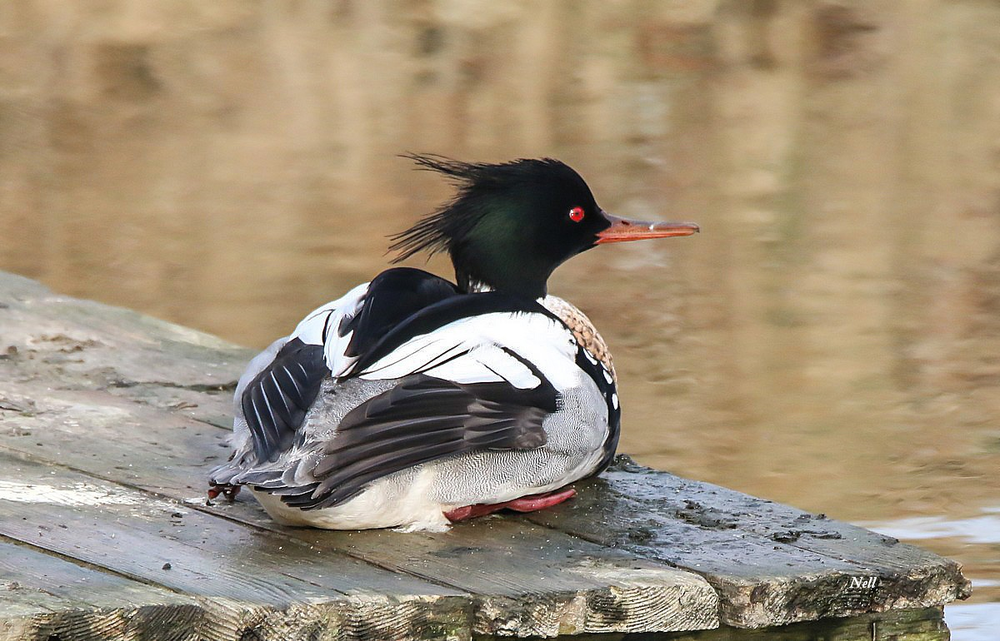

Le harle huppé est un canard plongeur. Son bec effilé rouge, sa tête noire avec des reflets verts, son collier
blanc et sa huppe lui confèrent un style inimitable. Le mâle est facile à reconnaître avec sa double huppe, son
collier blanc et sa poitrine roussâtre tachetée de noir. Par contre, les femelles et les juvéniles ressemblent
fortement à ceux du Harle bièvre. Cependant, l'observateur chevronné fera sans peine la distinction entre les
deux espèces. En effet, les harles bièvres femelles et juvéniles présentent une très nette séparation entre la
tête brune et le cou blanc alors que les femelles et les juvéniles de harle huppé voient le brun de la tête se
fondre sans transition dans le gris du cou.
Le harle tient son nom de son habitude à nager le corps submergé (Mergus, de mergere, submerger).
Taille : 58 cm
Envergure : 70 à 86 cm
Poids : 1000 à 1250 g
Longévité : 9 ans
Ordre : Ansériformes
Famille : Anatidés
Genre : Mergus
Espèce : serrator
Ordinairement silencieux, le cri dissyllabique assez doux du mâle en parade répond au kokokok rauque et grognant
de la femelle.